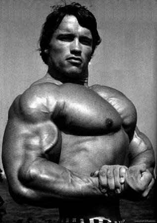

ARNOLD SCHWARZENEGGER

Arnold Alois Schwarzenegger (Thal, 30 luglio 1947) è un attore, politico, imprenditore, produttore cinematografico ed ex culturista austriaco naturalizzato statunitense.
Sin da giovane si è imposto come uno dei maggiori culturisti del mondo. Affermato uomo d'affari, ha costruito la propria carriera sul suo fisico, grazie al quale è entrato nel
mondo del cinema. La celebrità gli è derivata dall'interpretazione del guerriero barbaro Conan, al quale ha fatto seguito il primo film della esalogia di Terminator, in cui
è un inarrestabile e letale cyborg venuto dal futuro, un personaggio, il Terminator, che si è imposto, già col primo film, nell'immaginario collettivo. Nel 1991, con
Terminator 2 - Il giorno del giudizio, l'allora film più costoso della storia, Schwarzenegger raggiunge l'apice della carriera cinematografica. Considerato tra gli interpreti
più rappresentativi dei film d'azione, occupa un posto di rilievo nello star system del cinema statunitense.
Avvicinatosi alla politica nei primi anni novanta, è diventato membro attivo del Partito Repubblicano. Nel 2003 è stato eletto 38º Governatore della California. Nel 2006 è
stato riconfermato alla stessa carica. Nel gennaio 2011, al termine del suo mandato, è tornato al cinema.
Noto anche per la sua attività contro il razzismo, l'inquinamento e il riscaldamento climatico, nel maggio del 2004 e del 2007 è stato inserito nella lista del Time 100 come
una delle cento persone più influenti impegnate per aiutare il mondo. Nel 2015 è stato introdotto nella WWE Hall of Fame.
A lui è intitolato l'Arnold Classic, evento considerato come la seconda competizione di culturismo più importante al mondo, dopo il Mr. Olympia.
Biografia
I primi anni
Nacque il 30 luglio 1947 nel villaggio di Thal (Stiria) in Austria, secondogenito di Gustav Schwarzenegger (1907-1972), Gendarmerie-Kommandant della polizia locale, e
Aurelia Jadrny (1922-1998), casalinga; il fratello maggiore di Arnold si chiamava Meinhard. La famiglia era di religione cattolica, assai devota e praticante. Cresciuto
con un rapporto conflittuale col severo padre che durante la seconda guerra mondiale aveva prestato servizio nella polizia militare come sergente, ebbe invece un buon rapporto
con la madre.
Negli studi inferiori, Schwarzenegger mostrò una buona media, spiccando anche per le sue doti di "simpatia, buon umore ed esuberanza". Il padre, agonista di curling, spinse i
figli verso l'eccellenza atletica. Schwarzenegger crebbe quindi praticando vari sport: calcio, curling, nuoto, pugilato, getto del peso e lancio del giavellotto e all'età di
14 anni scelse di intraprendere la carriera di culturista.
Nel 1961 conobbe l'ex Mister Austria Kurt Marnul, che lo invitò ad allenarsi nella palestra Athletic Union di Graz, dove iniziò anche a lavorare da apprendista carpentiere. Nel
febbraio del 1964 vinse i campionati cittadini e nazionali di curling nella divisione giovanile.
Nel 1971 il fratello Meinhard rimase ucciso in un incidente automobilistico. Un anno più tardi, il padre Gustav morì a causa di un infarto.
La vita adulta
All'età di 18 anni, nel 1965, prestò per un anno servizio militare obbligatorio nell'esercito austriaco, effettuando missioni militari speciali. Era inoltre pilota di carri armati
M47 Patton. Durante l'addestramento di base disertò per partire di nascosto per Stoccarda e prendere parte al concorso Mister Europa per juniores, vincendolo. Essendosi
assentato senza permesso fu condannato a due mesi di carcere militare (per alcuni, due settimane). Vinse poi un'altra gara di bodybuilding a Graz presso l'hotel Steirer Hof
(nella quale in precedenza si era classificato secondo). Vinse quindi il titolo di "Fisico migliore d'Europa" a Stoccarda, continuando ad allenarsi durante il servizio militare.
Dopo il congedo, nel 1966, si trasferì a Monaco di Baviera. Non avendo ancora i mezzi economici per prendere in affitto un appartamento, dormiva sul pavimento della stessa palestra
alla quale si era iscritto. Per un breve periodo, aprì una propria palestra, chiusa presto per via di debiti.
Decise di recarsi a Londra per partecipare al concorso Mister Universo del 1966 promosso dalla NABBA (National Amateur Body-Builders´ Association). A questa gara arrivò secondo
dopo Chester Yorton. Charles "Wag" Bennet, uno dei giudici della gara del 1966, fu colpito dal giovane Arnold e si offrì di allenarlo. Bennet lo invitò a vivere nella propria casa
sopra una delle sue due palestre a Forest Gate e, attraverso un programma di allenamento studiato da Bennet, si concentrò sul miglioramento della definizione muscolare per dare più
potenza alle gambe. Vivere nell'East End londinese aiutò nel frattempo Schwarzenegger a migliorare la propria rudimentale conoscenza dell'inglese.
Sempre nel 1966 ebbe l'opportunità di incontrare il suo idolo d'infanzia, l'ex culturista Reg Park, che divenne suo amico e mentore. Nel 1967 vinse il titolo di Mister Universo
per la prima volta, diventando il più giovane vincitore di sempre all'età di 20 anni. Ritornò a Monaco, allenandosi dalle 4 alle 6 ore al giorno, frequentando la facoltà di economia
e commercio all'Università di Monaco e lavorando presso la palestra di Rolf Putzinger dal 1966 al 1968, anno in cui ritornò a Londra dove vinse un altro titolo di Mister Universo.
Trasferimento negli Stati Uniti d'America
Schwarzenegger si trasferì negli Stati Uniti d'America nel settembre del 1968, a 21 anni. Secondo lo studio legale di immigrazione Siskind & Susser, tra la fine degli anni sessanta
e all'inizio del 1970 si sarebbe potuto considerare Schwarzenegger un immigrato clandestino a causa di violazioni legate al visto d'ingresso.
Cominciò ad allenarsi nel club Gold's Gym a Santa Monica, in California, sotto la direzione di Joe Weider. Dal 1970 al 1974 due dei compagni di allenamento di Schwarzenegger furono
i wrestler Ric Drasin e "Superstar" Billy Graham. Nel 1970 ottenne il primo titolo di Mister Olympia a New York, a 23 anni. Nel frattempo frequentò i corsi generali del Santa Monica
City College in California, avviò un'attività edilizia insieme al collega e amico Franco Columbu e una propria attività di vendita per corrispondenza. Nel 1973 iniziò a seguire i
corsi di economia aziendale alla Università della California, Los Angeles mentre nell'ottobre del 1975 a Pittsburgh iniziò un tour di seminari che toccava sei città. Nel 1977
pubblicò l'autobiografia/guida all'allenamento fisico dal titolo Arnold: The Education of a Bodybuilder ("Arnold: l'educazione di un body-builder"), che ebbe grande successo.
Dopo quattro anni di studi ottenne un bachelor all'Università del Wisconsin, laureandosi in marketing internazionale del fitness e business administration nel 1979. Nel 1983, allo
Shrine Auditorium di Los Angeles, divenne cittadino statunitense, mantenendo anche la sua nazionalità. Tre anni dopo, nel 1986, sposò la giornalista televisiva Maria Shriver, nipote
dell'ex presidente John Fitzgerald Kennedy.
Carriera nel culturismo
Schwarzenegger guadagnò fama inizialmente come culturista. Il suo fisico armonioso rivoluzionò lo sport, facendogli guadagnare l'epiteto di "quercia austriaca" e permettendogli di vincere i titoli di Mister Europa Junior, Mister World, Mister Universo (cinque volte) e Mister Olympia (sette volte). Viene considerato una delle maggiori figure della storia del culturismo, celebrata nella gara annuale conosciuta come Arnold Classic.
Iniziò ad allenarsi nel garage di casa, dove si costruì una palestra con attrezzi rudimentali finché non gli venne proposto di allenarsi nella palestra di Graz, che raggiungeva ogni giorno in bicicletta, a una decina di chilometri da casa sua. Nel 1964 si classificò terzo al Mr. Austria e Mr. Ercole e quarto al Mr. Steiermark. Nel 1965 vinse a Stoccarda con punteggio massimo il suo primo titolo ufficiale, quello di Mr. Europa Junior e conobbe l'italiano Franco Columbu, destinato a diventare uno dei suoi amici più fedeli. Nel 1966 vinse il Mr. Europa a 19 anni e arrivò secondo dietro a Chester Yorton (uno degli unici tre bodybuilder al mondo che sono riusciti a battere Schwarzenegger in competizione) alla gara di Mr. Universo, organizzata a Londra dalla NABBA. Nell'ottobre dello stesso anno vinse il titolo di "Fisico migliore d'Europa" a Stoccarda e un titolo pesi massimi di powerlifting. E l'anno dopo, sempre a Londra, diventò il più giovane Mr. Universo della storia, bissando poi il successo nel 1968 a Londra. A quel punto, accettò le offerte di Joe Weider e si trasferì a Santa Monica, negli Stati Uniti. A Miami vinse il Mr. Universo nella categoria alta statura, ma arrivò secondo alle spalle di Frank Zane nella classifica assoluta.
Nel 1969 vinse il Mr. International a Tijuana, il Mr. Universo IFBB a New York, il Mr. Universo NABBA professionistico a Londra e il Mr. Europa IFBB a Essen; poi si classificò secondo alle spalle di Sergio Oliva al Mr. Olympia. Ebbe modo di conoscere Reg Park, e dopo la vittoria londinese del titolo di Mr. Universo si trasferì con lui in Sudafrica, dove si allenarono insieme. Nel 1970 sconfisse a Londra Reg Park, attirato in competizione per sfruttare promozionalmente la sua rentrée e la sfida con Schwarzenegger; a Columbus riuscì a battere il Mr. Olympia in carica Sergio Oliva, aggiudicandosi il titolo di Mr. Mondo.
Mr. Olympia

Il suo primo tentativo fu nel 1969, quando arrivò secondo alle spalle del 3 volte campione Sergio Oliva. Tornò nel 1970 e vinse la competizione. Il 5 dicembre riceve il riconoscimento IFBB "Certificate of Merit". Continuò nelle competizioni del 1971-1974. Nel 1975 vinse il titolo per la sesta volta consecutiva, battendo Franco Columbu. Dopo il Mr. Olympia contest del 1975, Schwarzenegger annunciò il suo ritiro da professionista di bodybuilding.
Mesi prima del Mr. Olympia contest 1975, i registi George Butler e Robert Fiore persuasero Schwarzenegger a farsi filmare durante gli allenamenti per il documentario di bodybuilding Uomo d'acciaio (Pumping Iron). Schwarzenegger aveva tre mesi per preparare la competizione, dopo aver perso notevole peso per apparire nel film Un autentico campione con Jeff Bridges. Uno Schwarzenegger più leggero del solito vinse il Mr. Olympia del 1975. Così, dopo essere stato proclamato Mr. Olympia per la sesta volta, Schwarzenegger si ritirò dalle competizioni.
Dal 1976 al 1979, in società con Jim Lorimer promosse il Mr. Olympia a Columbus, del quale fu anche telecronista esperto per la CBS. Tornò a gareggiare nel Mr. Olympia del 1980. In forma grazie all'allenamento per il film Conan, decise di partecipare. Assunto come telecronista per una rete televisiva, annunciò all'ultimo momento la sua decisione di competere. Vinse il settimo titolo con sette settimane di preparazione e si ritirò ufficialmente dalle competizioni. Il suo record di sette vittorie del Mr. Olympia resistette undici anni fino a che Lee Haney non vinse l'ottavo titolo consecutivo come Mr. Olympia nel 1991. Il suo libro "La nuova enciclopedia del moderno bodybuilding" (1985) è considerato uno dei capisaldi di genere. Nel 1989 organizzò il primo Arnold Classic a Columbus, annuale manifestazione di bodybuilding seconda, per prestigio, solo al Mister Olympia.
Schwarzenegger è rimasto un volto dello sport per un lungo periodo dopo il suo ritiro, in parte per le palestre e riviste di fitness gestite e in parte presiedendo a gare ed esibizioni. Per molti anni ha scritto una rubrica mensile per le riviste di culturismo Muscle and Fitness e Flex. Poco dopo essere stato eletto governatore della California, è stato nominato simbolicamente direttore esecutivo di entrambe le riviste. Le riviste hanno accettato di donare 250.000$ ogni anno alle iniziative di Schwarzenegger per il fitness.
Strongman
Nel 1967 Schwarzenegger ha gareggiato e vinto nella gara di sollevamento pietre (pietre di Atlante) di Monaco, dove una pietra del peso di 508 libbre tedesche (254 kg/560 lbs) è sollevata tra le gambe stando su due poggiapiedi. Riguardo alle proprie misure atletiche, Schwarzenegger ha affermato: "Al vertice della mia carriera avevo polpacci di 20 pollici, cosce di 28.5, 34 pollici di vita, petto di 57 e braccia di 22 pollici". In posizione di squat completo (glutei vicino a terra) Schwarzenegger aveva un record personale di 181 kg/400 lbs per 12 ripetizioni mentre nello Stacco da terra o anche Deadlift (in inglese) sollevava 322 kg.